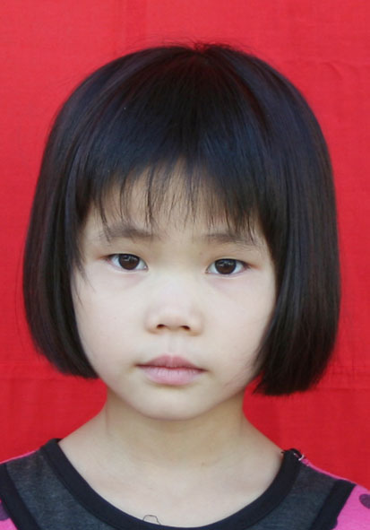
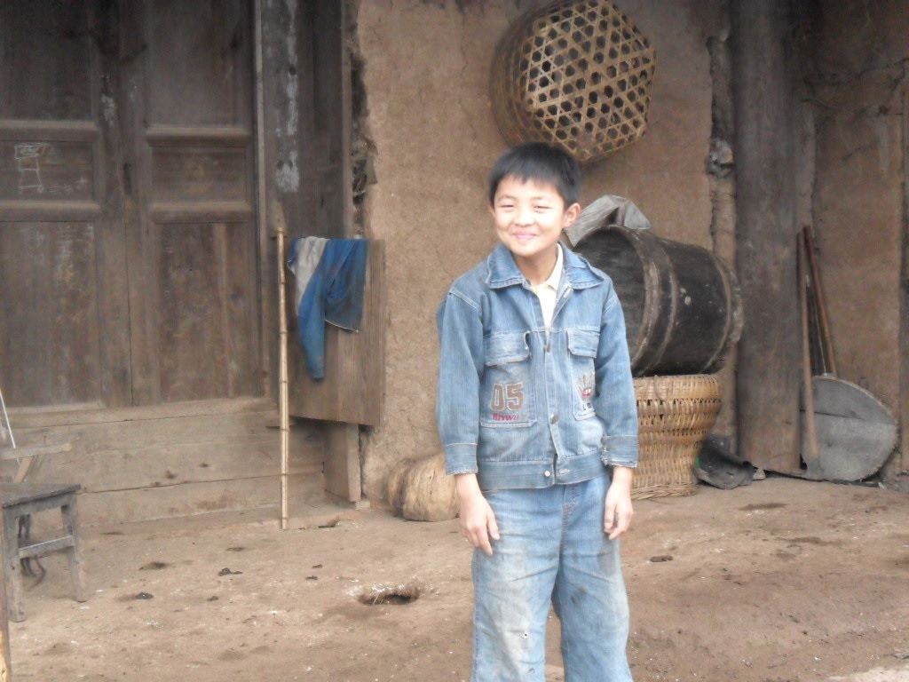
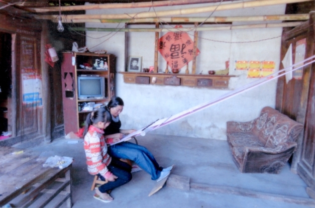
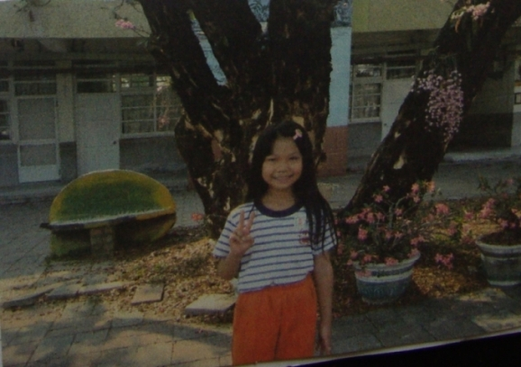
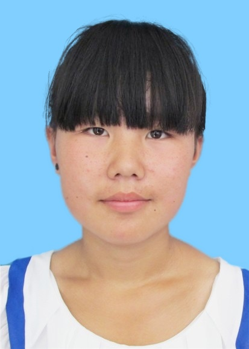

已获长期资助孩子
已获长期资助孩子
随着美中下一代教育基金会工作的进一步开展，我们得到了许许多多热心帮助贫困学生就学各界人士的帮助和支持，也为了满足许多希望长期资助贫困学生爱心人士的愿望，我们从2013年秋季起， 开始长期资助贫困学生的工作。原则上，已经获得过教育基金会资助的贫困孩子将于获得资助的第二年自动成为需长期资助候选对象，直到到高中毕业或自动辍学为止。
每资助一位优秀贫困学生所需金额： 每年$300. 基金会每年发放2000元人民币到学生手中.
捐款方法与联系方式：
如果你愿意长期资助一位或几位优秀贫困学生，请参看我们的长期资助候选优秀贫困学生资料并填写长期资助捐款人登记表。填写好的表格可电邮到longtermsupport@fornextgen.org，或邮寄到表格中提供的地址。
若需了解详情请查看《长期资助贫困孩子项目的实施细则》，或与我们联系longtermsupport@fornextgen.org
下面112位优秀学生已经得到了爱心人士的长期资助。
-

董珀均
2004年12月生，男，四川省巴中市巴州区花丛镇中心小学，董珀均在校尊敬老师， 团结同学，是个听话懂事的孩子，学习上肯动脑筋，十分努力，成绩优异。该生父母双亡，现居住在姐姐董培家，姐姐去年结婚了。姐弟二人生活十分困难。开学后开始上4年级。
长期资助者： 段颖哲，基金会负责人： 潘玲。
-
岳 阳
2002年5月生，男，四川省巴中市巴州区平梁乡中心小学，岳阳的爸爸岳华无职业， 母亲姜华是原棉纺厂的下岗职工，靠平时打零工维持生活。爷爷岳兴荣去年突患脑溢血至今瘫痪在床，奶奶辛兴容长期患严重冠心病、胃病。家庭生活十分困难。下学期6年级。 上学期是班上的三好学生。
班主任推荐意见：岳阳同学是我班一位勤奋好学、聪明懂事的好孩子。尽管他家庭条件极差，但他小小年纪诚实善良，尊敬师长，遵守纪律，团结同学，关心集体，乐于助人，积极参加劳动， 学习成绩优秀。自一年级至现在一直是我班班长，每学期成绩都是第一名。鉴于岳阳同学品学兼优但家庭十分贫困，如因家庭原因影响了他的成长很是可惜，所以经我们班级评选， 一致推荐他为美中下一代教育基金会基金待资助对象。长期资助者： 古永生，基金会负责人： 杨春荣。
-
彭 月
2000年8月生，女，巴中市巴州区恩阳镇第三中学。
班主任推荐意见：彭月同学非常懂事，在校从不与其他同学比吃穿，学习刻苦认真，表现良好。曾经做过班上的课代表、学习委员，现任该班班长。期期考试成绩均列全班前三名。 上学期期末检测成绩位于全班第一，年级第二。该同学家庭经济确实困难，爸爸于2002年病死，母亲（湖南人）外出务工，多年没有音讯。全家仅靠奶奶一人务农维持生活， 读书期间的生活费大多由已出嫁的姑姑补贴和亲友帮助。鉴于此，特推荐该同学为美中下一代教育基金会奖学金申请对象。长期资助者： Melissa Li，基金会负责人： 杨春荣。
-

陈心岭
1998年7月生，男，四川省巴中市巴州区平梁乡福星中学，陈心嶺一家六口人，二子女读书，靠父母务农，偶尔父亲务工收入养家。
班主任推荐意见：该生学习优异,同时诚实可信。该生家境清贫，一家六口人，二子女读书于福小，仅靠父母在家务农，偶尔父亲务工的收入维持生计。 今年考入巴中中学的尖子班。成绩非常优秀。长期资助者： 莫干，海平，基金会负责人： 潘玲。
-

彭芙蓉
2000年2月生，女，巴中市巴州区玉山镇中心小学。开学后升初中。
班主任推荐意见：该生品学兼优。但家庭生活实属困难，姐妹两人读书，父亲患有严重的精神病，母亲因父亲生病离家出走，没有音讯。 靠年近80的祖母一人劳作维持一家仁的生活和供姐妹2人读书。长期资助者： 段颖哲，基金会负责人： 潘玲。
-

彭英华
2003年4月生，女，巴中市巴州区玉山镇中心小学。
班主任推荐意见：该生热爱祖国，团结同学，待人诚恳，对人有礼貌，学习成绩优异。因家中父亲长期患有精神病，生活不能自理，姐妹2人读书，母亲离家出走多年， 家中靠年迈的祖母劳动，生活相当困难。彭英华是彭芙蓉的妹妹。长期资助者： 段颖哲，基金会负责人： 潘玲。
-

邓俊芝
2003年9月生，女，四川省巴中市巴州区花丛镇中心小学，爷爷奶奶务农，爸爸常年有病，在外干苦力。她没有妈妈。 她是爸爸领养的。性格开朗。成绩很好。
班主任推荐意见：该生全家四口人，爷爷、奶奶在家务农，爸爸邓波多病，但为了一家生计常年在外务工，收入非常低微，家庭人均月收入150元左右。家庭居住环境极差，现还居住在三间茅草房里， 但是该生还是对生活充满了信心，在家干力所能及的家务活，经常为年迈的爷爷、奶奶端茶递水，周围的邻居都夸她是个懂事的好孩子。 该生在校文明守纪，尊敬师长，团结同学，热爱劳动， 乐于助人。上课认真听讲，积极思考，主动与大家交流学习成果，学习成绩在平时和期末综合测评中均为优秀。长期资助者： 刘菲菲，基金会负责人： 张译心。
-
贾 玲
2003年2月生，女，巴中市巴州区光辉乡中心小学。4口人，母亲瘫痪在床，只凭父亲一人打零工供2个孩子上学。
班主任推荐意见：贾玲家中4口人，母亲瘫痪在床生活不能自理，仅凭父亲做点零活来维持生计，家中经济实属困难。但这孩子自幼懂事，在校表现优秀，学习成绩也很优异， 深受老师和同学的喜爱。长期资助者： 杨春荣，基金会负责人： 张译心。
-
李 星
1998年11月21日生，男，四川省巴中市巴州区群乐初级中学，家庭生活全由其父耕种4亩农田维持，其母亲又患有精神分裂症，常年借助药物调节，无法从事过重的家务劳动， 经济异常拮据，举步维艰。为了能让子女顺利完成学业，其父不分昼夜为别人干农活出苦力来挣钱，但家庭开支太大，无法承担，只好靠借款和贷款坚持学业，如今家庭已负债3万多元。孩子们面临严重的生活困难，随时都有辍学的危机。
班主任推荐意见：同学在校期间表现优秀，学习认真刻苦、待人和蔼、团结同学、遵纪守法，是同学们学习的好榜样。生活节俭、勤劳朴实、体贴父母。长期资助者： 高宏，基金会负责人： 张译心。
-
朱春玲
2003年1月生，女，云南省保山市龙陵县象达乡营坡完全小学4年级学生。 该同学全家五口人，母亲在家照料老人和两个孩子，家庭经济收入主要靠父亲在外打零工。
班主任推荐意见：该同学孝顺父母，遵守纪律，学习刻苦，成绩优异。长期资助者： 张洪波，基金会负责人： 朱江宁。
-
梅婷婷
2002年7月生,女。家庭生活靠爸爸做建筑工维持。云南省保山市龙陵县象达乡中心学校5年级学生。
推荐老师意见：梅婷婷同学性格活泼开朗，尊敬师长，团结同学，待人有礼。在家能帮助父母做一些力所能及的事；在学校能虚心接受老师的教导，自觉遵守校纪校规。作为班长，梅婷婷同学工作认真、执着，有爱心，关心集体，乐于助人。对待老师交给的工作，能兢兢业业， 用心去做好每一件事情，是老师的好助手。能确立目标，树恒心与毅力，勤于思考，大胆质疑，学习成绩优良，是一名品学兼优的好学生。长期资助者： 刘雯，基金会负责人： 朱江宁。
-
李志宽
1999年4月生，男，家住云南省保山市龙陵县象达乡小米地村凉姜林，龙陵县第三中学初一187班学生，没有收入。母亲病故，父亲服刑，沦为孤儿。
班主任推荐意见：该生在校遵纪守法，尊敬师长，热爱学习，热心集体，学习成绩优秀，但因该生母亲因病早故，父亲又在服刑，该生现在沦为孤儿，更无法承担现在生活，学习所需的大量费用，为保障其正常生活，顺利完成学业，特此原因推荐该生申请奖学金。长期资助者： 段颖哲，基金会负责人： 潘玲。
-

缺照片赵智华
男，1998年10月生，新乡县合河中学学生。父母双亡，与八十岁奶奶一起，靠政府救济生活，无收入。
班主任推荐意见：赵智华以优异成绩考入我校，入学后他学习上积极乐观，踏实勤奋，认真求实，学习成绩不断提高。生活上，虽然在物质生活上不及别的同学，但他并不悲观，依然乐观从容，过着勤俭节约的生活。 给师生们留下了很好的印象。总之，他是一个不断进取，品学兼优的学生。长期资助者： 段颖哲，基金会负责人： 潘玲。
-
张佳佳
女，出生于2001年7月19日，现年12岁，就读贵州柏山小学3年级。
父母离异， 父亲张廷智， 现年38岁， 外出打工 多年未归， 现在佳佳由年迈的爷爷奶奶抚养， 家中无其他经济来源， 家庭年收入估计为￥500为左右，现住址为： 贵州省桐梓县柏山村花园组。
该生在校遵守纪律，学习努力，成绩优秀，家庭困难，由班主任老师程吉玉，和王兴才校长推荐。长期资助者： 爱心人士，基金会负责人： 潘玲。
-

令狐昌琴
女，出生于2002年2月21日，现年11岁，就读贵州柏山小学五年级。
令狐昌琴实为杨明福养女，没有母亲，杨明福年事已高（现年63岁），家中无其他人或其他经济来源，仅靠养父家务农维持两人的生活，家庭经济情况困难。现住址为： 贵州省桐梓县柏山村坪上组。
该生家离学校比较远，在生活学习中非常懂事，在校遵守纪律，成绩优秀，家庭困难，经班主任陆曼老师和王兴才校长推荐。长期资助者： Olivia Lu，基金会负责人： 杨春荣。
-

兰永镇
男，出生于2002年4月28日，现年11岁，就读贵州柏山小学五年级。
父亲兰再育，残疾， 现年55岁，在家务农； 母亲赵琴，患有痴呆症，现年38岁。 家中无精壮劳动力，家庭年收入估计￥300为左右，现住址为： 贵州省桐梓县柏山村坪上组。
该生家离学校比较远，在校遵守纪律，学习努力，成绩优秀，家庭困难，经班主任陆曼老师和王兴才校长推荐。长期资助者： Olivia Lu，基金会负责人： 杨春荣。
-
陆星语
壮族，出生于2001年12月，就读于广西河池侧拉合小学，家庭住址： 侧岭乡拉合村拉柱屯。
家庭简介：这是一个不幸的家庭，学生父亲在2010年在一次意外事故中死亡，家里的顶梁柱没了，全家就像塌了一样，学生的母亲由于受不了劳动的艰辛，抛下小孩和公婆，远嫁他乡，再也没有回来。小孩的爷爷奶奶只好种两亩田，以维持全家生活，给小孩读书。他们最大的愿望就是小孩能够扶养小孩长大成人，享受其它孩子一样得到的教育。但是，年龄是最大的考验，爷爷奶奶都是70岁的人了，他们还能扶养这个学生多久呢？希望社会上的爱心人士伸出援手，帮助这个学生渡过难关。家庭成员：爷爷 70岁；奶奶，68岁；学生：9岁。
经济来源：种两亩水田，养些鸡鸭。长期资助者： 柴青，基金会负责人： 潘玲。
-
石桥珍
女，出生于2000年1月2日，现就读云南省芒市三台山九年制学校六年级。
家中可耕地面积少，而且都是贫瘠的山地，没有其它经济来源，家庭人均月收入90元。现住址为： 云南省德宏州芒市三台山允欠村帮弄组。
该生在校遵守纪律，尊敬师长，团结同学，热爱班集体，学习刻苦努力，学习成绩优秀，但因家庭贫困，生活过得很拮据，无法承担现在生活、学习所需的费用，为使该生能顺利完成学业，特些推荐该生申请奖学金。经班主任杨玉彩老师和张发瑞老师推荐。长期资助者： Charlie & Junye Comeau，基金会负责人： 张心译。
-
邹 莹
女，出生于2005年8月30日，现就读江苏南京溧水东屏群力小学二年级。
父母务农收入低，邹莹有眼疾每年要清洗眼睛花费很多积蓄,家庭生活贫困。现住址为： 江苏南京溧水东屏镇群力长乐村。
该生是一个勤奋好学、成绩优异、团结同学、关心集体。能有一个自强的责任心，能积极参加体育锻炼，能帮助同学、敬师、尊老的好学生。经班主任邓恒喜老师和王庆福老师推荐。长期资助者： 段颖哲，基金会负责人： 潘玲。
-
郑小红
汉族，刚满13岁，金城江区河池镇红七初级中学七年级学生。
母亲在她一岁多的时候就离家出走了，家里只有她和残疾的爸爸，一直靠国家扶贫度日。 （以上是郑小红和访问她的志愿者的合影）。长期资助者： 潘玲，基金会负责人： 潘玲。
-

缺照片陈雅婷
汉族，出生于2000年5月，就读于侧岭小学，今天住址： 侧岭乡拉腊村上字屯。
家庭成员：母亲，学生、妹妹，弟弟（已过继给哥哥）
父亲因矿难已死多年，家里租种别人的两亩地。母亲一个在广东打工。目前没有住房，寄宿在哥哥家，家里没有耕地。长期资助者： 钟京，基金会负责人： 朱江宁。
-
姚东发
男，出生于2001年11月15日，现就读云南省德宏州芒市三台山九年制学校五年级。
家中因地少，加之土地贫瘠，经济收入微薄，家庭生活困难，家庭人均月收入100元。现住址为： 云南省德宏州芒市三台山允欠村允欠三组。
姚东发同学是一名优秀的学生。他遵守校规校纪，尊敬师团结同学，他热爱学习，关心集体，学习成绩优异，但因为家中田地少，加之土地贫瘠，经济收入微薄，家庭生活较困难。很难承担该生的生活，学习所需的费用，为顺利完成学业，特此推荐该生申请奖学金。经班主任李红梅老师和李维信老师推荐。长期资助者： 刘雅惠，基金会负责人： Shawna/李晓赣。
-
李玉意
女，出生于1999年7月1日，现就读云南省德宏州芒市三台山勐丹小学六年级。
因其母亲重病在床，哥哥也在艰难的上大学，家庭生活困难，家庭人均月收入100元。现住址为： 云南省德宏州芒市三台山乡勐丹小组。
该生在校遵纪守法，尊敬师长，热爱学习，热爱集体，学习成绩突出，但因其母亲重病在床，哥哥也在艰难的上大学，这样支持孩子读书的困难家庭，特此推荐该生申请奖学金。经班主任李红英老师和李春方老师推荐。长期资助者： Amy Liu，基金会负责人： 张译心。
-
罗 琴
女， 出生于2002年11月19日，现年11岁，就读柏山小学4年级。
罗琴实为61岁的罗德书养女，罗德书靠在家务农的一点收入抚养罗琴。 家中无劳动力，无经济来源， 家庭年收入估计为￥200为左右，现住址为： 贵州省桐梓县柏山村坪上组。
该生在校遵守纪律，学习努力，成绩优秀，家庭困难，经班数学老师罗春建和王兴才校长推荐。长期资助者： 方永青，基金会负责人： 潘玲。
-
章 悦
女，出生于2002年2月25日，现就读江苏南京溧水东屏群力小学五年级。
爷爷瘫痪在床，奶奶身体不好，妈妈需要照顾三个病人（还有一位住在一起有精神疾病的二爷），仅靠父亲一人打工维持生活，无其他经济来源，家庭生活困难。现住址为： 江苏南京溧水东屏镇群力爱廉魏家庄村。
该生品学兼优、富有爱心、平易近人，乐于为班级服务，吃苦在先，积极参加校内外各类活动，表现出色。书写美观，处处严格要求自己，是老师的好助手，得到老师和学生的一致好评。经班主任张壮胜老师和华春凤老师推荐。长期资助者： 陈敏， 程磊，基金会负责人： Shawna/李晓赣。
-
李 楠
女，壮族，1999年5月3日生，家住侧领乡拉合村加米屯，现就读于拉合小学四年级，上学期期末考试语文85，数学95，获校级三好生奖。
家庭状况：人口7人，外祖父母年近七旬，父母离异，母亲于2009年再婚生一同母异父的弟弟，其舅先天性弱智，靠继父和母亲种田维持生活家庭经济极其困难。长期资助者： 刘菲菲，基金会负责人： 张译心。
-
伍秋边
女，壮族，2004年1月21日生，家住侧领乡拉合村拉柱屯，现就读于拉合小学一年级，上学期学习成绩优秀，获校级三好生奖。
家庭情况：人口7人，父亲伍德新，48岁，为人老实忠厚，家中除了两个姐姐和自己读书（大姐就读于河池中学）外两个弟妹还未入学，一家人靠种4亩田维持生活，无其他经济来源。长期资助者： 邓琪，基金会负责人： 潘玲。
-
何木努
女，出生于2000年12月6日，现就读云南省德宏州芒市三台山九年制学校六年级。
家中耕地少，而且都是贫地，没有其他经济来源，家庭人均月收入90元。现住址为： 云南省德宏州芒市三台山乡帮外村委会拱别小组。
该学生在校遵守纪律，尊敬师长，团结同学，热爱学习，热爱班集体，学习成绩优秀，但因为家庭特别困难，无法承担现在生活、学习所需的费用，为顺利完成学习，特此推荐该生申请奖学金。经班主任田丽花老师和赵彩芬老师推荐。长期资助者： 杨惠传， 沈杨，基金会负责人： 张译心。
-
段玉意
女，出生于2002年5月30日，现就读云南省芒市三台山九年制学校四年级。
家里耕地少，土地贫瘠，除耕地外没有其它经济来源，家庭人均月收入100元。现住址为： 云南省德宏州芒市三台山乡邦外村一组。
该生在校遵守学校纪律，尊敬师长，团结同学，乐于助人，热爱学习，学习成绩优异，但因家里劳动力少，土地少又贫瘠加上供养该生上学致家庭生活比较困难，为使该生能顺利完成学习，特此推荐该生申请奖学金。经班主任胡昆娇老师和杨改娇老师推荐。长期资助者： 郑铭， 万筱华，基金会负责人： 朱江宁。
-
王应君
男，出生于2004年2月19日，现年12岁，就读柏山小学三年级。
父亲王兴富， 现年39岁，现在天津当搬运工，母亲杨世慧，在天津治病，年收入￥5000。 因为王应君的母亲生病多年， 2013年春节过后，父亲开始在外打工为其看病，之前父母均为农民。 现在王应君祖母一人看管，家中的三兄妹， 家庭经济情况困难。现住址为： 贵州省桐梓县柏山村毛落组。
该生在校遵守纪律，成绩优秀，家庭困难，经程吉玉老师和王兴才校长推荐。长期资助者： 卢怡，基金会负责人： 张译心。
-
王应敏
女，出生于2004年7月15日，现年9岁，就读柏山小学2年级。
父亲王兴华，32岁， 目前在绥阳县当搬运工； 母亲马龙梅， 现年30岁， 在家务农。 家庭年收入估为￥5000为左右。
现住址为： 贵州省桐梓县柏山村沿河组。
该生在校遵守纪律，学习努力，成绩优秀，家庭困难，由班主任老师张晓丽，和王兴才校长推荐。长期资助者： 郑铭， 万筱华，基金会负责人： 朱江宁。
-
王 涛
男，生于2006年，2月13日，现年7岁，就读柏山小学一年级。
父亲王为成， 现年29岁，在家务农。母亲付辅素，现年27岁， 在家务农。家庭年收入￥500元。 现住址为： 贵州省桐梓县柏山村长湾组。
该生成绩优异， 好学聪颖， 但家庭以务农为主， 无其他经济收入来源，家境困难。经由班主任李智老师和王兴才校长推荐。长期资助者： 齐航，杨真，基金会负责人： 李晓赣。
-
谭秀群
女， 出生于2005年7月01日，现年8岁，就读柏山小学2年级。
父亲谭世贵， 现年36岁， 在家务农； 母亲许开敏， 现年36岁， 在家务农。 家中无其他经济来源，靠天吃饭， 家庭年收入估为￥500为左右，现住址为： 贵州省桐梓县柏山村沿河组。
该生在校遵守纪律，学习努力，成绩优秀，家庭困难，由班主任老师张晓丽，和王兴才校长推荐。长期资助者： Grace Ye，基金会负责人： 潘玲。
-
马兴敏
女， 出生于2005年5月18日，现年8岁，就读柏山小学4年级。
父亲马咏华， 现年35岁， 在家务农； 母亲陶素珍， 31 岁在家务农。 该生为少数民族， 母亲体弱多病， 靠种地为生，无其他经济来源， 家庭年收入估计为￥400为左右，现住址为： 贵州省桐梓县柏山村毛落组。
该生家，在校遵守纪律，学习努力，成绩优秀，家庭困难，经班班主任老师罗春建，任课老师史玉刚，和王兴才校长推荐。长期资助者： Grace Ye，基金会负责人： 潘玲。
-
任浩然
男，出生于2005年7月1日，现就读江苏南京溧水东屏群力小学二年级。
只靠爷爷做小工维持生活，无其他经济来源,家庭月收入低于400元。现住址为： 江苏南京溧水东屏镇群力白马浮山。
该生在校遵守纪律，能按时完成作业，写了一手好字，学习成绩在班上名列前茅，是个品学兼优的好学生。在家能听爷爷奶奶的话，也是个好孩子。可是，家庭经济十分的困难，若能得到贵单位的奖学金助学，该学生准能成为有用之才。经班主任张昌贵老师和李朝亮老师推荐。长期资助者： Kent Wu，基金会负责人： 潘玲。
-
张士禹
男，出生于2004年7月8日，现就读江苏南京溧水东屏群力小学三年级。
妈妈患心脏病常年吃药，靠爸爸务农维持生活,家庭月收入低于400元。现住址为： 江苏南京溧水东屏镇莲花山。
该生是一个忠厚、诚实的男孩，在学习上，他扎实勤勉，肯干吃苦、虚心求教，成绩稳中有升。在生活中，他乐于助人、富有爱心；在家也非常听话，可是由于妈妈的事情，家庭十分困难，如能得到这次资助的机会，该同学将来定能成为有用之才。经班主任王凌燕老师和李清云老师推荐。长期资助者： 张晨，基金会负责人： 杨雪梅。
-
李思雨
女，出生于2001年11月3日，现就读江苏南京溧水东屏群力小学五年级。
家庭主要靠社会低保和爷爷打工维持生活，父亲因长年患慢性病医药开支较大，月收入低于400元。现住址为： 江苏南京溧水东屏镇群力太尉庄。
该生是一位听话乖巧的小姑娘，学习也很认真刻苦。家中因父亲常年生病，靠低保补助和年迈的爷爷打工维持生活。日子过得很清贫。经班主任张映芳老师和何元达老师推荐。长期资助者： Xiao Gan Li & Raymond Jiang，基金会负责人： 朱江宁。
-
王瑞宇
男，出生于2002年12月13日，现就读江苏南京溧水东屏群力小学五年级。
母亲肾移植花去所有积蓄，父亲要照顾母亲，只能偶尔抽空打工维持生活，生活比较贫困，是典型的因病致贫的家庭。现住址为： 江苏南京溧水东屏镇群力爱廉五石井村43号。
该生品德优良、学习勤奋、成绩优异、善思乐苦、人际关系好，具有关心集体的好思想。能自强不息、广泛读书、遵纪守法、兴趣爱好广，深受师生的喜爱。经班主任张壮胜老师和喻桂华老师推荐。长期资助者： Xiao Gan Li & Raymond Jiang，基金会负责人： 朱江宁。
-
王 瑶
女，出生于2004年7月10日，现就读江苏南京溧水东屏群力小学三年级。
单亲家庭爸爸生病无劳动能力，靠爷爷打工维持生活,家庭月收入低于400元。现住址为： 江苏南京溧水东屏镇蒲杆。
该生能很好地遵守学校纪律、集体荣誉感强，积极参加各项活动。在学习方面，一贯是积极进取，一丝不苟，各科学习都是优良。在家也是非常听爸爸爷爷的话，经常帮忙做些力所能及的家务。可是家庭十分困难，作为班主任非常渴望该生能得到这次资助的机会。给她一个创造无限可能的舞台。经班主任王凌燕老师和李清云老师推荐。长期资助者： 郑铭， 万筱华，基金会负责人： 朱江宁。
-
章 倩
女，出生于2001年12月5日，现就读江苏南京溧水东屏群力小学五年级。
母亲患重病最终离世，留下沉重医疗债务，家庭月收入低于400元。现住址为： 江苏南京溧水东屏镇群力五谷塘。
该生是一位品学兼优的学生，每门功课每次考试都名列前茅。母亲前几年患绝症，看病花去二三十万后刚刚去世。家中债务累累，生活的重担落在了父亲身上，父亲身体也不是很好，家中经济十分困难。经班主任张映芳老师和何元达老师推荐。长期资助者： 谷耘， 黄辉，基金会负责人： 潘玲。
-
章 雷
男，出生于2002年7月15日，现就读江苏南京溧水东屏群力小学五年级。
章雷和章霞是一对龙凤胎,父母有病靠爷爷维持生活,家庭月收入低于400元。现住址为： 江苏南京溧水东屏镇群力夏家边。
章雷和章霞是对龙凤胎,既为这个家庭带来了无尽的欢乐，又为家庭带来了严重的经济负担。由于父母身体状况严峻，只靠年迈的爷爷奶奶承担这繁重的家庭开销，其艰难程度难以想像。这对龙凤胎在校表现极好，都聪明可爱，学习成绩令老师和家长满意。经班主任张映芳老师和何元达老师推荐。长期资助者： 郑铭， 万筱华，基金会负责人： 朱江宁。
-

章 霞
女，出生于2002年7月15日，现就读江苏南京溧水东屏群力小学五年级。
章雷和章霞是一对龙凤胎,父母有病靠爷爷维持生活,家庭月收入低于400元。现住址为： 江苏南京溧水东屏镇群力夏家边。
该生是一对龙凤胎，聪明可爱，有很强的上进心。喜欢看书，各门功课都很优秀，经常得到老师和同学们的表扬。该生父亲一直生病，生活都不能完全自理，家庭的重担落在了爷爷奶奶的身上，生活很苦难。经班主任张映芳老师和何元达老师推荐。长期资助者： 郑铭， 万筱华，基金会负责人： 朱江宁。
-
冷恩达
男，出生于2001年4月5日，现年12岁，就读柏山小学六年级。 父亲冷宗锦， 现年42 岁， 在家务农；母亲李老八，38岁，在家务农。 家庭年收入￥500元，居住条件简陋，恶劣经济情况困难。现住址为： 贵州省桐梓县柏山村幸福组。 在校遵守纪律，成绩优秀，家庭困难，经史张晓丽老师，玉刚老师和王兴才校长推荐。
长期资助者： 汪迪，基金会负责人： 潘玲。
-
门德荣
男，出生于2003年4月3日，现就读云南德宏州梁河县九保阿昌族乡永和小学五年级。现住址为： 云南德宏州梁河县九保阿昌族乡永和村永和社.
父母在外打零工,家庭生活贫困，家庭人均月收入低于100元。
门德荣家住贫困山区，家中有6口人，爷爷奶奶年老体弱多病，父母亲是憨厚老实的庄稼人，在外打零工。姐姐就读于九保乡九保中学七年级。家中田地少，人口多，经济来源少，每年人均收入不足千元。家里房屋极其陈旧破烂，经常漏雨，无钱修善。家庭开支大部分靠政府支助，是村里政府的扶助对象。
经班主任李丽娟老师和数学老师岳俊仙老师推荐。长期资助者： Kent Wu，基金会负责人： 潘玲。
-
门思奇
女，出生于2004年9月13日，现就读云南德宏州梁河县九保阿昌族乡永和小学三年级。 现住址为： 云南德宏州梁河县九保阿昌族乡丙盖村那乱昌社。
家庭主要靠父亲在外打工和母亲打零工来维持家庭生活。家中只有一亩5分田地，一部分种植水稻一部分种植甘蔗每年收入低微。家庭人均月收入低于90元。
家中有五口人. 奶奶：体弱多病，无劳动能力。需要花费财力和人力照顾。父亲：农民, 常年在外打工。母亲：一直靠给周边村寨打零工来贴补家用。由于常年操劳身体已经带上了严重的风湿病。弟弟：今年5岁还没有上学。
经班主任孙永澳老师和数学老师赵明老师推荐。长期资助者： 盛韧，基金会负责人： 潘玲。
-
周同弟
女，出生于1998年5月8日，现就读云南德宏州梁河县小厂中学九年级。现住址为： 云南德宏州梁河县平山乡上河东村委会核桃窝一组。
父母打工务农收入低,家庭生活贫困，家庭人均月收入低于150元。
家中有五口人. 奶奶因常年劳累，积劳成疾，风湿很严重，经常需要住院打针.弟弟年幼. 家里只有1.2亩山田。父亲远出打工挣钱，母亲则在家中务农
经物理老师张安沙老师和语文老师杨明尚老师推荐。长期资助者： Richard He，基金会负责人： 李晓赣。
-
张兴礼
女，出生于2003年6月26日，现就读云南德宏州梁河县九保阿昌族乡永和小学四年级。现住址为： 云南德宏州梁河县九保阿昌族乡丙盖村那乱昌社。
全家共三口人。 父母务农收入低, 家庭生活贫困。主要靠低保，家庭人均月收入低于80元。父亲打工受伤，造成脊柱断裂，后半生只能在轮椅上度过，丧失了独立生活的能力，饮食起居也需要家人照顾，更无任何赚钱的能力。每个月只有106元的农村低保收入。全家人只能靠张兴礼的母亲一个人来支撑全家的生活。家里只有1.2亩的水田种植水稻. 还要和叔叔家共同担负奶奶的医药费。
经语文老师杨杏菲老师和数学老师闫祖香老师推荐。长期资助者： Martin He，基金会负责人： 李晓赣。
-

曹玉晗
女，出生于2003年1月17日，现就读云南德宏州梁河县九保阿昌族乡丙盖村丙盖小学五年级。现住址为： 云南德宏州梁河县九保阿昌族乡丙盖村村民小组。
父亲务农收入低,母亲进城打零工，家庭生活贫困。还有爷爷共同生活要负担，家庭人均月收入低于200元
经数学老师李来仙老师和语文老师梁寿昌老师推荐。长期资助者： 舒静，基金会负责人： ???。
-
段生洋
男，出生于2005年4月27日，现就读云南德宏州梁河县遮岛镇小学二年级。现住址为： 云南德宏州梁河县九保阿昌族乡龙营村委会小河头村。
家庭收入主要靠妈妈打工。 爸爸在乡下务农。爷爷奶奶已不能从事劳动，没有收入。家庭人均月收入低于100元。
家里有年迈的爷爷、奶奶，爸爸、妈妈, 有一个姐姐在上中学。
经语文老师杨艳波老师和数学老师梁艳梅老师推荐。长期资助者： 邓丽萍，基金会负责人： ???。
-
赵兴敏
女，出生于2003年5月19日，现就读云南德宏州梁河县九保阿昌族乡丙盖村丙盖小学四年级。现住址为： 云南德宏州梁河县九保阿昌族乡丙盖村村民小组。
父母务农收入低,家庭生活贫困，家庭人均月收入100元。
奶奶年迈在家，需要照顾。姊妹都在读书。
经数学老师罗然老师和语文老师尹维增老师推荐。长期资助者： 刘菲菲，基金会负责人： ???。
-
赵留鹏
男，出生于2004年3月3日，现就读云南德宏州梁河县九保阿昌族乡丙盖村丙盖小学四年级。现住址为： 云南德宏州梁河县九保阿昌族乡丙盖村村民小组。
父母务农收入低。妹妹在校读书， 家庭生活贫困， 家庭人均月收入250元
经数学老师罗然老师和语文老师尹维增老师推荐。长期资助者： 书志诚，基金会负责人： ???。
-
赵紫霞
女，出生于2002年12月22日，现就读云南德宏州梁河县九保阿昌族乡丙盖村丙盖小学五年级。现住址为： 云南德宏州梁河县九保阿昌族乡丙盖村村民小组。
父母务农收入低,家庭生活贫困。爷爷奶奶多病，在一起共同生活需要帮助，人均月收入低于280元。去年家中失火， 烧毁了全部家当。生活更加困难。
经数学老师李来仙老师和语文老师梁寿昌老师推荐。长期资助者： 江卷，基金会负责人： 潘玲。
-
赵 萌
女，出生于2003年1月9日，现就读云南德宏州梁河县九保阿昌族乡永和小学五年级。现住址为： 云南德宏州梁河县九保阿昌族乡丙盖村那乱昌社。
家有五口人。年迈多病的爷爷、奶奶，还有爸爸、妈妈。两年前，不幸患上了红斑狼疮病。从此，再也无法打工挣钱了。妈妈患病之后，经常住院，吃药，每年都要花去大笔的医疗费。爸爸游手好闲、不务正业，家庭经济债台高筑。人均月收入低于100元
经语文老师李丽娟老师和数学老师岳俊仙老师推荐。长期资助者： 江卷，基金会负责人： 潘玲。
-

傅鈺廷
女，出生于2005年10月8日，现就读高雄市中壇國小三年级。
父為勞工，領殘障收入。
该同学品学兼优， 和善乐观。 连续三年被评为班级模范。长期资助者： 李露，基金会负责人： 潘玲。
-
葉冠淼
男，出生于2001年3月5日，现就读高雄市南隆國中一年级。
父母雙亡，由親友支助撫育。
每周只有100～200元台币的早餐费。 不够部分须由尚在读书的姐姐周末打工补贴。尽管发育的瘦小，却十分上进。 成绩列全班第一。长期资助者： Amanda Huang，基金会负责人： 潘玲。
-
宋俊熙
男，出生于2001年2月24日，现就读高雄市美濃國中一年级。
單親，由爸撫養，爸爸入獄服刑，由祖父母撫養，收入不固定。
在班上成绩几乎一直名列第一。长期资助者： 阙美卿，基金会负责人： 潘玲。
-
黄玲慧
女，出生于2000年7月24日，现就读于武鸣县府城镇中心学校七年级。
家中仅靠父亲一人种植几亩田地勉强维持生计，无其他经济收入，家庭月收入400元。
班主任陆大广老师推荐意见： 黄玲慧在校表现优秀，学习成绩优异。父亲病故。母亲有严重脑膜炎后遗症，不能从事体力劳动。现寄住外婆家，生活困难。长期资助者： 莫干， 海平，基金会负责人： 潘玲。
-
黄丽珍
女，出生于2005年3月，现就读于武鸣县府城镇府城小学三年级。
家中仅靠父亲一人种植几亩田地勉强维持生计，无其他经济收入，家庭月收入400元。
班主任徐丽兰老师推荐意见：黄丽珍从小父母离异，同父亲生活，父亲又体弱多病，常年服药，没有其他经济来源，仅靠家里几亩田地维持生计，家庭生活很困难。这孩子没有因为家庭困难而放弃学习，在校更加勤奋努力，学习成绩优良，尊敬老师，团结同学，乐于助人，是个品学兼优的学生。长期资助者： 匿名资助人，基金会负责人： 舒静。
-
卓嘉隆
男，出生于2002年7月，现就读于武鸣县府城镇府城小学五年级。
家中仅靠父亲一人种植几亩田地勉强维持生计，无其他经济收入，家庭月收入400元。
班主任黄妹英老师推荐意见：卓嘉隆在校学习勤奋，成绩优良，思想品德好，乐于助人，是个品学兼优的学生。母亲去年因患脑肿瘤去世，医治欠下高债，姐姐又在读大学，仅靠其父亲一人种家中的几亩农田维持生计，没有其他经济来源，家庭生活十分困难。长期资助者： 邓丽萍，基金会负责人： 李晓赣。
-

黎雪鸣
女，出生于2005年1月6日，现就读于武鸣县府城镇德灵小学三年级。
父母离异，现跟随母亲生活，母亲在外打工，无固定工作，收入低，再加上为治女儿脸上的红胎印，花费很多治疗费，家庭月收入500元。
班主任李香琴老师推荐意见：黎雪明同学品行端正，成绩优秀，家庭的确困难，同意推荐。长期资助者： 刘菲菲，基金会负责人： 杨雪梅。
-

缺图片谢蒙毅
男，出生于2002年11月9日，现就读于武鸣县府城镇寺圩小学四年级。
父母双亡是个孤儿，跟伯父一起生活，无经济来源。
班主任蒙梅鲜老师推荐意见：该学生是一个聪明的孩子，有很强的接受能力和思维能力，学习成绩优异。平时乐于助人，尊敬师长，团结同学，劳动积极。身处逆境，毫不气馁，不退缩，不追求享受，只追求方方面面的进步。作为班干部，能在各方面都起带头作用，是一个品学兼优的学生。长期资助者： 付小丽，苏自强，基金会负责人： 杨雪梅。
-
韦敏敏
女，出生于2002年3月28日，现就读于武鸣县府城镇文泉小学五年级。
家里田地少，没有什经济收入。家庭月收入180元。
班主任苏秀勤老师推荐意见：韦敏敏同学思想觉悟高，是一个积极上进的人，她做事踏实，不怕困难，平时表现突出，学习刻苦勤奋，成绩保持名列前茅。热爱劳动，积极参加学校的各类活动。维护公共秩序，更能遵守学校的纪律。但家庭经济困难，家中田地少，有姐姐和本人就读，爸爸体弱多病不能干重活，仅靠妈妈一人做农工来支撑，生活十分困难。因此，同意申请。长期资助者： 张晨，基金会负责人： 杨雪梅。
-
杨武锋
男，出生于2003年4月，现就读于武鸣县府城镇东江小学四年级.
杨武锋三岁时母亲病故，父亲于2011年9月底因积劳成疾患肝癌病故，已经读四年级了，家庭几乎没有什么经济收入，靠政府的项目资助上学，生活很困难，现由伯父照顾他的生活。
班主任陆建华老师推荐意见：该生情况属实，同意推荐资助。长期资助者： 刘菲菲，基金会负责人： 杨雪梅。
-
尹侾森
男，出生于2001年1月4日，现就读于武鸣县府城镇文泉小学三年级。
田地少，家中又没有劳动力。家庭月收入180元。
班主任莫利民老师推荐意见：尹侾森同学在校各方面表现好，懂礼貌，敬师长，团结同学。学习上勤奋刻苦，各科学习成绩在期末考试中名列前茅。但家庭经济困难，父母不幸双亡，现与80岁的爷爷生活，爷爷常年吃药，家里田地少，没有其他经济收入，生活十分拮据。因此同意申请。长期资助者： 张晨，基金会负责人： 杨雪梅。
-
鍾旨柔
女，出生于2004年3月25日，现就读高雄市龍山國小四年级。
父亡，家中有祖母、姐為三人，靠寡母賣農產品，收入微薄。长期资助者： 劳纤淇（Jessica Lao)，基金会负责人： 董维。
-
黃俊瑋
男，出生于2001年3月5日，现就读高雄市南隆國中一年级。
父母雙亡，由親友支助撫育。长期资助者： 袁晨皓，基金会负责人： 董维。
-
黃俍凱
男，出生于2002年9月15日，现就读高雄市龍肚國小五年级。
低收入戶，父車禍無法行動，母新住民，無法工作，家庭人均月收入5000元，低收入戶補助.长期资助者： 李冰，基金会负责人： 董维。
-
林于靖
女，出生于2002年10月17日，现就读高雄市吉東國小五年级。
父亡，母改嫁，由祖母撫養，年紀大，無固定工作，靠補助金、獎學金過活。
学习成绩从一年级到五年级一直在班里名列前茅。长期资助者： 阙美卿，基金会负责人： 董维。
-
林佳翰
男，出生于1999年5月25日，现就读高雄市南隆國中三年级。
一家七口。父亡，母不負責任，由姑姑代養，收入低。长期资助者： 周志明，基金会负责人： 董维。
-
周韶唐
男，出生于2006年9月22日，现就读高雄市中壇國小一年级。
父以臨時工賺錢，收入不固定。
活泼开朗， 学习优异。长期资助者： 谢秀央，基金会负责人： 董维。
-
陳姝羽
女，出生于1999年9月10日，现就读高雄市南隆國中二年级。
家庭入低收。
成績優越、孝順、做家事，曾獲市長獎。长期资助者： 高宏，基金会负责人： 董维。
-
鍾尚賢
男，出生于2002年5月14日，现就读高雄市龍肚國小六年级。
父亡，母重病，無收入，靠微薄勞保補助過活。
性格温和， 与同学相处融洽。长期资助者： 匿名资助人，基金会负责人： 董维。
-
覃瑞辉
男，出生于2000年1月3日，现就读于武鸣县府城填中心学校八年级。
仅靠父亲一人靠种植玉米和水稻获得的收入维持家庭生计。家庭月收入250元。
班主任潘雄林老师推荐意见：该生学习成绩优秀，为人友善，家庭生活确实困难，同意申请。长期资助者： 匿名资助人，基金会负责人： 王新慧。
-
张艳
女， 出生于1999年2月，现就读于贵州省黔西县协和中学七年级，家住协和镇花甲村新阳组。
学习非常刻苦，一直名列前茅，3-4个弟妹，务农，家庭贫困，家庭月平均收入200元。
经班主任夏忠芬老师和语文老师黄坤老师推荐。长期资助者： 杨玉，基金会负责人： 王新慧。
-
叶彬婷
女， 出生于2000年11月，现就读于贵州省黔西县协和中学七年级，家住协和镇向阳组。
学习努力，父母离异，3个孩子由爷爷奶奶照管，家庭月平均收入200元。
经班主任夏忠芬老师和语文老师黄坤老师推荐。长期资助者： 李冰，基金会负责人： 王新慧。
-
赵紫寻
男， 出生于2001年1月，现就读于贵州省黔西县协和中学七年级，家住协和镇杨柳村同心组。
以种植农业为主，家庭月平均收入200元。
经班主任杨军老师和语文老师曾婵老师推荐。长期资助者： 李冰，基金会负责人： 王新慧。
-
朱星星
女， 出生于2001年4月，现就读于贵州省黔西县协和中学七年级，家住协和镇杨柳村长山组。
以种植农作物为主，家庭月平均收入230元。
经班主任杨军老师和语文老师揭学敏老师推荐。长期资助者： 李冰，基金会负责人： 王新慧。
-
袁海媚
女， 出生于2000年8月，现就读于贵州省黔西县协和中学七年级，家住协和镇石人村朝门组。
奶奶长期生病，3个姊妹，偏僻山村，土地贫瘠，人多地少，家庭月平均收入200元。
经班主任李定明老师和英语杨憬老师推荐。长期资助者： 莫干，海平，基金会负责人： 汪迪。
-
张德琴
女， 出生于2000年12月，现就读于贵州省黔西县协和中学八年级，家住协和镇石狼厂村下坝组。
2姊妹，很懂事，母亲长年生病，家庭月平均收入130元。
经班主任高德会老师和数学老师罗进老师推荐。长期资助者： 匿名资助人，基金会负责人： 王新慧。
-
李威
男， 出生于1999年12月，现就读于贵州省黔西县协和中学八年级，家住永兴乡枫相村幕礼组。
父亡，哥哥辍学，土坯房，有3个姊妹，母亲一人务农，家庭月平均收入100元。
经班主任高德会老师和数学老师罗进老师推荐。长期资助者： 匿名资助人，基金会负责人： 王新慧。
-
马有骏
女， 出生于1998年6月，现就读于贵州省黔西县协和中学七年级，家住太来乡五锁村箐脚组。
奶奶体弱，5姊妹，老大，人多地少，家庭月平均收入200元。
经班主任王琴老师和语文老师高德会老师推荐。长期资助者： 李露，基金会负责人： 王新慧。
-
杨清清
女， 出生于2000年12月，现就读于贵州省黔西县协和中学八年级，家住协和镇海坝村定山组。
父母离异，父亲是唯一劳动力，务农，家庭月平均收入180元。
经班主任王琴老师和语文老师高德会老师推荐。长期资助者： Eric Munger，基金会负责人： 王新慧。
-

潘婷
女， 出生于2000年8月，现就读于贵州省黔西县协和中学七年级，家住协和镇仡仲村胜利组。
父亲外出广东打工，留守、残疾，家庭月平均收入550元。
经班主任王明老师和数学老师陈永才老师推荐。长期资助者： 汪迪，基金会负责人： 汪迪。
-

缺照片徐龙贵
男， 出生于1999年5月，现就读于贵州省黔西县协和中学七年级，家住协和镇淹坝村东方红组。
父亲在家务农，母亲体弱多病，家庭月平均收入120元。
经班主任王琴老师和语文老师高德会老师推荐。长期资助者： 小丹，基金会负责人： 王新慧。
-
齐文浩
男，出生于2005年4月28日，现就读黑龙江省宾县经建中心小学四年级。
家里只有十多亩地，妈妈残疾，无生活能力，家庭人均月收入300元。现住址为： 黑龙江省宾县经建乡杨德岐屯。
经班主任宓秀丽老师和英语老师李权文老师推荐。长期资助者： 路尚儒，基金会负责人： 王新慧。
-
候思琦
男，出生于2005年4月17日，现就读黑龙江省宾县经建中心小学四年级。
只靠爸爸外出打工，爷爷奶奶年纪大了，无生活能力。家庭人均月收入300元。现住址为： 黑龙江省宾县经建乡所在地。
经班主任赵淑梅老师和英语老师刘丽玲老师推荐。长期资助者： 凌强，基金会负责人： 王新慧。
-
付帅
男，出生于2006年11月10日，现就读黑龙江省宾县经建中心小学二年级。
家里土地面积少，爷爷奶奶体弱多病，家庭人均月收入200元。现住址为： 黑龙江省宾县经建乡楝树村黄家屯。
经班主任孙淑晶老师和数学老师娄英老师推荐。长期资助者： 张纲，基金会负责人： 王新慧。
-
皮奥琪
女，出生于2008年7月19日，现就读黑龙江省宾县经建中心小学一年级。
家里地少，人多，奶奶生病住院，有外债，家庭人均月收入600元。现住址为： 黑龙江省宾县经建乡经建村沟张家屯。
经班主任杜会玉老师和科学老师孙晓凤老师推荐。长期资助者： 李森，基金会负责人： 王新慧。
-
刘德玉
女，出生于2005年12月29日，现就读黑龙江省宾县经建中心小学三年级。
爷爷奶奶年龄已大，无劳动能力， 家里只有十多亩地，发包在外，家中四口无其他收入，家庭人均月收入150元。现住址为： 黑龙江省宾县经建乡常和村小色术岗屯。
经班主任潘洪英老师和体育老师吴丛老师推荐。长期资助者： Eric Munger，基金会负责人： 王新慧。
-
赵时楠
女，出生于2002年1月15日，现就读黑龙江省宾县经建中心小学五年级。
靠6亩地和养几头猪生活，家庭人均月收入300元。现住址为： 黑龙江省宾县经建乡所在地。
经班主任张洪霞老师和数学老师蔡久玲老师推荐。长期资助者： 江卷，基金会负责人： 王新慧。
-
闫相文
男，出生于2005年6月15日，现就读黑龙江省宾县宾州第四小学四年级。
由于爸爸生病脑出血，不能自理，妈妈正在照顾中，暂时没有经济来源靠低保生活，家庭人均月收入209元。现住址为： 黑龙江省宾县宾州镇南阳工队。
经班主任向艳霞老师和数学老师肖文颖老师推荐。长期资助者： 莫干，海平，基金会负责人： 王新慧。
-
曹凤倚
女，出生于2001年7月9日，现就读湖南省新化县桑梓镇坪溪中学八年级。
家居高寒山区，房屋简陋，家里靠父亲做零工挣点钱，家庭人均月收入800元。现住址为： 湖南省新化县桑梓镇新焕村三组。
经班主任杨飞建老师和生物老师刘尚平老师推荐。长期资助者： 洪升华，基金会负责人： 郭建。
-
李萍
女，出生于2007年8月20日，现就读湖南省新化县桑梓镇坪溪学校一年级。
家居高寒贫困山区，父亲去世，母亲改嫁，爷孙相依为命，孤苦伶仃，房屋破烂不堪，完全没有经济来源，家境特别贫困，家庭人均月收入100元。现住址为： 湖南省新化县桑梓镇大皂村。
经班主任李光松老师和语文老师康赛云老师推荐。长期资助者： 匿名资助人，基金会负责人： 郭建。
-
杨扶
女，出生于2002年8月17日，现就读湖南省新化县桑梓镇坪溪中学七年级。
父母重病，住院治疗花费不菲，基本丧失劳动能力，可谓因病致贫，家住煤矿沉陷区，家庭人均月收入800元。现住址为： 湖南省新化县桑梓镇塘冲村。
经班主任侯唯华老师和地理老师曹太华老师推荐。长期资助者： Jenny Liu，基金会负责人： 郭建。
-
杨风涛
男，出生于2001年9月8日，现就读湖南省新化县桑梓镇坪溪中学八年级。
奶奶年老多病，父母身体状况也差，又加之家住偏远高寒山区，家庭收入非常有限，姐姐又读大学，为治病，为两个孩子读书，不得不借钱，使本已艰辛的家庭更加度日艰难。现住址为： 湖南省新化县桑梓镇云玉村。
经班主任戴校权老师和数学老师曹春光老师推荐。长期资助者： 孙文莉，基金会负责人： 郭建。
-
黎仕武
男，出生于2002年1月15日，现就读湖南省新化县桑梓镇坪溪中学七年级。
该生父母离异，母亲远嫁他乡，父亲离家出走，爷爷奶奶体弱多病，房屋破烂，家境贫寒。现住址为： 湖南省新化县桑梓镇新平村。
经班主任姜唯老师和英语老师李星老师推荐。长期资助者： 何帆，基金会负责人： 郭建。
-
杨玉姣
女，出生于2003年9月16日，现就读湖南省新化县桑梓镇坪溪学校六年级。
家居高寒贫困山区，收入来源有限，家庭人均月收入200元。现住址为： 湖南省新化县桑梓镇大皂村。
经班主任杨芳兰老师和生物老师李湘华老师推荐。长期资助者： 匿名资助人，基金会负责人： 郭建。
-
杨思羽
女，出生于2007年9月9日，现就读湖南省新化县桑梓镇坪溪学校二年级。
父亲体弱多病，子女又多，全靠弱不经风的母亲维持一家生计又居住在贫困高寒山区，家境实在贫寒，家居破旧，生活简朴，家庭人均月收入90元。现住址为： 湖南省新化县桑梓镇云玉村。
经班主任杨运山老师和语文老师康赛云老师推荐。长期资助者： 李冰，基金会负责人： 郭建。
-
杨帅
男，出生于2006年3月3日，现就读湖南省新化县桑梓镇坪溪学校三年级。
父亲重病无法工作，母亲精神失常，常年住院治疗，导致全家基本无收入来源，靠举债度日，家庭人均月收入100元。现住址为： 湖南省新化县桑梓镇黄泥桥村。
经班主任杨立梅老师和语文老师李星老师推荐。长期资助者： 郭建，基金会负责人： 郭建。
-
扶文宏
男，出生于2000年2月28日，现就读湖南省新化县桑梓镇坪溪中学九年级。
只有父母亲靠勤劳赚些钱，爷爷奶奶没有收入，哥哥也在读书，本人因为运动锻炼时两次骨折，花费数万，家庭人均月收入500元。现住址为： 湖南省新化县桑梓镇石窖村。
经班主任易海峰老师和英语老师吴松梅老师推荐。长期资助者： 朱玥，基金会负责人： 郭建。
-
曹中铜
女，出生于2002年2月15日，现就读湖南省新化县桑梓镇坪溪中学七年级。
父亲于2014年8月14日因肺癌晚期去世，生病治疗花费4万元，去世时母亲借债给父亲办理后事。现在就靠母亲在外省鞋厂打工维持她和姐姐的生活费用，家庭人均月收入600元。现住址为： 湖南省新化县桑梓镇鸿圣店村一组。
经班主任曾少华老师和数学老师曹敏老师推荐。长期资助者： 高老大，基金会负责人： 郭建。
-
李珊珊
女，出生于2004年7月9日，现就读湖南省新化县桑梓镇洞沙小学六年级。
该生出生不久，父母因病双亡，现在由不是亲的养奶奶带着读书，祖孙二人靠奶奶的低保维持二人的生活，老式平房两间都是由村里各家各户集资的钱所建，家庭人均月收入800元。现住址为： 湖南省新化县桑梓镇洞沙村五组。
经班主任吴峰老师和数学老师李广中老师推荐。长期资助者： 郭建，基金会负责人： 郭建。
-
任秋美
女，出生于2006年11月6日，现就读四川省西充县宏桥乡小学三年级。
两个孩子读书，公婆丧失劳动能力，母亲操持家务，靠父亲打工维持生活。家庭人均月收入250元。现住址为： 四川省西充县宏桥乡4村6组。
经班主任杜艳梅老师和语文老师谢文茂老师推荐。长期资助者： 姜雨逍，基金会负责人： 王新慧。
-
何晶
女，出生于2005年11月4日，现就读四川省西充县太平镇小学三年级。
何晶在亲生母亲生下她一个月后遭遗弃，养父母当时没有生育，后来有了自己的两个孩子，以后何晶便无人照顾，靠年迈体弱的外公外婆照顾。家庭人均月收入300元。现住址为： 四川省西充县太平镇2村11组。
经班主任赵洁艳老师和语文老师范少濂老师推荐。长期资助者： 潘玲，基金会负责人： 王新慧。
-
何澄远
男，出生于2003年6月22日，现就读四川省西充县凤鸣镇小学六年级。
父母已经离异，父亲外出打工，无一技之长，外公外婆年事已高，失去劳动能力，只靠爸爸一人养全家，家庭人均月收入300元。现住址为： 四川省西充县中岭乡楼骑村8组。
经班主任任艳琳老师和数学老师马庆老师推荐。长期资助者： 许继军，基金会负责人： 王新慧。
-
冯佳海
男，出生于2000年10月3日，现就读四川省西充县鸣龙镇中心小学八年级。
幼年时丧母，外祖父母年老多病，叔叔手脚行动不便，家庭人均月收入300元。现住址为： 四川省西充县双洛村4村9组。
经班主任屈林梅老师和历史老师苏文龙老师推荐。长期资助者： 林玉，基金会负责人： 王新慧。
-
吉书瑶
女，出生于2008年5月19日，现就读四川省西充县祥龙乡小学一年级。
爷爷癌症去世，母亲白血病过世，欠下巨债，奶奶年老多病，患有高血压，糖尿病，家庭人均月收入500元。现住址为： 四川省西充县祥龙乡小学。
经班主任陈方毅老师和数学老师王文灿老师推荐。长期资助者： 倪健，基金会负责人： 王新慧。
-
樊奕
女，出生于2003年12月4日，现就读四川省西充县太平镇小学七年级。
父亲无文化，在家务农，母亲因患子宫癌无劳动能力，在家治疗至今，家庭人均月收入210元。现住址为： 四川省西充县太平镇。
经班主任孙先均老师和语文老师杨小艳老师推荐。长期资助者： 欧秀凤，基金会负责人： 王新慧。
-
范俊峰
男，出生于2002年6月11日，现就读四川省西充县仙林镇小学七年级。
父亲2007因病去世，母亲不知去向，爷爷年近七十，无劳动能力，家庭人均月收入不足百元。现住址为： 四川省西充县仙林镇11村7组。
经班主任李科霖老师和语文老师王旭强老师推荐。长期资助者： 匿名资助人，基金会负责人： 王新慧。
-
范明君
男，出生于2001年8月18日，现就读四川省西充县宏桥乡小学九年级。
父亲残疾，母亲有病，在家务农，还有高龄的奶奶，家庭人均月收入150元。现住址为： 四川省西充县宏桥乡李店垭村2社。
经班主任赵清老师和语文老师张志勇老师推荐。长期资助者： 匿名资助人，基金会负责人： 王新慧。
-
陈爱明
男，出生于2004年6月5日，现就读四川省西充县双凤中心小学五年级。
因祖母长期有病，患有坐骨神经，下肢不能动，完全丧失劳动能力，靠父亲做零工维持家庭生活，家庭人均月收入250元。现住址为： 四川省西充县佛宫山村11组。
经班主任何柳青老师和吴树荣老师推荐。长期资助者： 旷丹丹，基金会负责人： 王新慧。
-
龚如玉
女，出生于2003年5月21日，现就读四川省西充县中岭乡小学六年级。
父母离异，母亲收入微薄，现在同外公外婆生活在一起，家庭人均月收入800元。现住址为： 四川省西充县中岭乡10村5组。
经班主任白媛老师和语文老师朱芙蓉老师推荐。长期资助者： 江卷，基金会负责人： 王新慧。